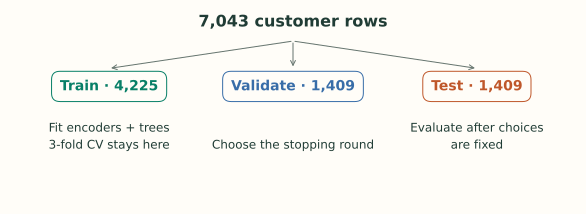
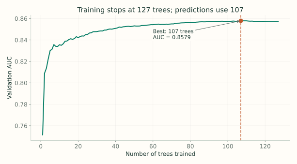
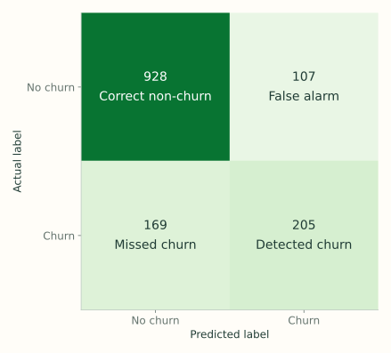
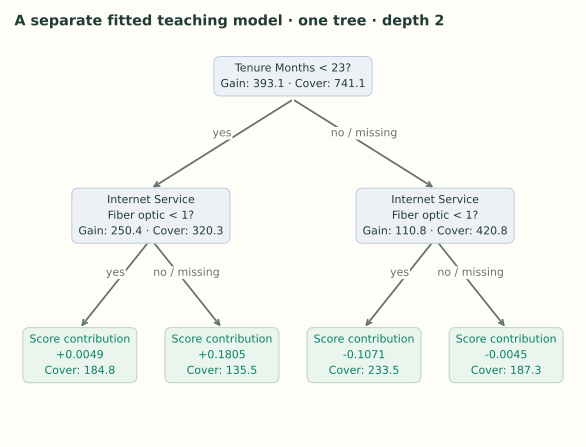

5. Python: Train, Tune, and Inspect XGBoost
Notes on StatQuest with Josh Starmer · Python: Train, Tune, and Inspect XGBoost · 56:43 video. Original explanations and redrawn figures accompany the video.
This note follows StatQuest’s end-to-end task: predict customer churn, clean the inputs, encode categories, train a baseline, tune it, and inspect a tree. The complete runnable script uses the same IBM sample’s 33-column workbook, with current APIs and a separate final test set.
The code excerpts below highlight the important steps. Run the complete script to reproduce the figures and recorded results:
python -m pip install -r requirements.txt
python churn_walkthrough.py --out resultsDownload requirements.txt and the script into the same directory. The script downloads the workbook from IBM if --data is omitted; an existing copy can be passed with --data Telco_customer_churn.xlsx. On macOS, XGBoost also needs an OpenMP runtime such as Homebrew’s libomp; see the installation guide.
Start with the prediction target and available inputs
Video 4:34 ↗The IBM sample has 7,043 customer rows. The target, Churn Value, is 1 for churn and 0 otherwise.
The lecture removes Churn Label, Churn Score, CLTV, and Churn Reason from the inputs. They are outcome-related fields rather than the customer attributes used in this exercise. Including the churn label or reason would give the model information about the answer.
Also remove the customer ID, the constant columns Count, Country, and State, and the combined Lat Long string because latitude and longitude are already separate features. Keep the target in y, with the remaining predictors in X.
This distinction is about when information becomes available. A feature that directly reports churn can make offline evaluation look excellent without helping predict future churn. Removing the outcome-related columns happens before fitting, and the target is never passed through the feature encoder.
A blank string is not a number
Video 13:43 ↗Total Charges contains 11 whitespace-only entries. That can cause a column of otherwise numeric values to be read as text. Convert it explicitly:
df["Total Charges"] = pd.to_numeric(
df["Total Charges"], errors="coerce"
)Now those blanks become NaN. The video fills them with zero after observing that the affected customers have zero tenure. This script keeps them missing so XGBoost can learn their default routes. Filling zero is appropriate only if it represents the actual meaning of “no charges” in your data.
Keep ordinary zeros as zeros. Setting missing=0 would also mark legitimate zero tenure and one-hot zeros as missing.
Give training, validation, and testing separate jobs
Video 24:03 ↗First reserve 20% for final testing. Split the remaining 80% into 60% training and 20% validation. Both splits use stratify=y so the churn proportion stays similar.

The video uses its held-out set during model development. Here we keep one more holdout so the reported test result measures performance on rows that selected neither the hyperparameters nor the stopping round.
For this static exercise, a random stratified split is adequate to reproduce the workflow. A real future-churn application would also need features available at a defined prediction date and an evaluation split matching that deployment.
Turn categories into usable feature columns
Video 25:55 ↗A column such as Contract contains categories. One-hot encoding creates indicators such as Contract_Month-to-month. A value of 1 means the customer has that category; 0 means they do not.
encoder = OneHotEncoder(
handle_unknown="ignore",
sparse_output=False
)Put this inside a ColumnTransformer: encode categorical columns and pass numeric columns through. Fit it on training rows, then transform validation and test rows with the fitted encoder. An unseen category becomes all zeros for that field.
The script uses dense output deliberately: every zero remains an explicit observed value, and NaN denotes a missing numeric value. When tuning, the encoder sits inside a scikit-learn pipeline so each cross-validation fold fits its own categories.
What a one-hot split means
If Contract_Month-to-month is 1, the customer has that contract type. A tree rule testing whether the indicator is below 1 sends the zero values left and the ones right. The tree is now making a category-membership decision using a numeric feature.
handle_unknown="ignore" means a new category cannot add an unexpected column at prediction time. It produces zeros for the fitted indicator columns of that field. Those zeros are a representation of an unseen category, not a declaration that every one-hot value is missing.
Fitting the encoder only on training data also fixes the meaning and order of its columns. A model saved separately from that mapping is incomplete: the tree might expect column 20 to mean one thing while a newly fitted encoder puts a different category there.
Train a baseline and let validation choose the round
Video 36:43 ↗The script fixes objective="binary:logistic", tree_method="hist", learning rate 0.1, row fraction 0.9, feature fraction 0.5, and $\gamma=0.25$. The baseline uses depth 3 and $\lambda=1$.
baseline = xgb.XGBClassifier(
**common,
max_depth=3,
reg_lambda=1,
n_estimators=1000,
early_stopping_rounds=20
)
baseline.fit(
A_train, y_train,
eval_set=[(A_val, y_val)],
verbose=False
)common contains the fixed settings listed above, including eval_metric="auc". A_train and A_val are the encoded arrays. The limit of 1,000 trees is a ceiling. Training stops after 20 rounds without an improvement in validation AUC.
AUC measures ranking across thresholds: does a churned customer tend to receive a higher score than a non-churned customer? It is different from recall at the final threshold of 0.5.
In the current sklearn interface, early_stopping_rounds belongs on the estimator. best_iteration is zero-based, so add 1 to get the selected number of trees. Its prediction methods automatically use that selected range. See early stopping and prediction behavior.
What happens during one call to fit?
The estimator initializes a raw score, calculates each training row’s gradient and Hessian, and builds a tree using those statistics. It adds the tree’s scaled leaf outputs to the current scores, then recomputes the statistics for the next round. These are the same steps worked by hand in Parts 1–3.
After each round, it predicts the validation rows and records AUC. Those rows are used to select the stopping point, not to choose that round’s feature thresholds or fit its leaf outputs. Training rows determine the tree; validation rows determine how far along the sequence to keep going.
The maximum of 1,000 trees is therefore different from the final selected ensemble size. Patience also means some trees are trained after the best round while the algorithm waits to see whether the metric improves again.
Tune a small, interpretable grid
Video 45:01 ↗The video uses GridSearchCV. This script tests eight combinations with three stratified folds, using only the training partition:
| Parameter | Values | What changes |
|---|---|---|
max_depth | 2, 4 | How many nested feature decisions a tree can make. |
reg_lambda | 1, 10 | How strongly leaf corrections shrink toward zero. |
scale_pos_weight | 1, 3 | The weight given to positive-label rows in the loss. |
Each fold trains 300 trees without early stopping. Choose the combination with the best mean cross-validation AUC, then fit it on the training partition with early stopping on the separate validation partition. This keeps one external validation set from being reused inside every fold.
scale_pos_weight=3 multiplies positive rows’ gradient and Hessian contributions by 3, affecting both split scores and leaf values. It does not simply multiply the final predicted probability. It can improve churn recall while increasing false alarms, and weighted-loss probabilities need not be calibrated to the original class frequency.
For the recorded run, the selected parameters were max_depth=2, reg_lambda=10, scale_pos_weight=1, with mean cross-validation AUC 0.8597. This is a small instructional search, not proof that these settings are globally optimal.

Read the search and stopping result together
There are $2\times2\times2=8$ parameter combinations. Three-fold cross-validation fits each one on three different training-fold arrangements, so this grid requires 24 fits. Each held-out fold comes from the 4,225-row training partition; neither the external validation set nor the final test set is a fold.
The selected parameters are then fitted again with the separate validation set for early stopping. In this recorded run, best_iteration=106 means the best ensemble contains 107 trees. The fit produces 127 trees before the 20-round patience period expires.
For this one-tree-per-round binary model, prediction should use trees 0 through 106. The sklearn wrapper handles that automatically. If using the native booster directly, request iteration_range=(0, 107); the upper endpoint is exclusive. This distinction matters when loading or serving a model after early stopping. See the prediction documentation.
Report the result on the untouched test rows
Video 49:44 ↗The threshold is fixed at 0.5. The following numbers come from running this companion script; they are not copied from the video, whose data handling and split differ.
| Model | Selected trees | Test AUC | Churn precision | Churn recall |
|---|---|---|---|---|
| Baseline | 57 | 0.8576 | 65.7% | 52.1% |
| Tuned | 107 | 0.8541 | 65.7% | 54.8% |
The tuned model detects 10 more churned customers and raises five more false alarms. Its test AUC is slightly lower. Choosing a winner on cross-validation does not guarantee improvement on a fresh test set.

Recall answers “of the customers who churned, how many did we catch?” Precision answers “of those we flagged, how many actually churned?” Higher recall can come with more false alarms. AUC alone does not choose that tradeoff.
The script saves the fitted model, fitted encoder, data checksum, package versions, and measured results. Keep the encoder with the model: the trees expect exactly the feature order used during fitting.
Calculate the reported precision and recall
The tuned model correctly flags 205 churned customers and misses 169. Its churn recall is $205/(205+169)\approx54.8\%$. It also flags 107 non-churned customers, so its churn precision is $205/(205+107)\approx65.7\%$.
The two denominators answer different questions. Recall counts all actual churn cases. Precision counts all alerts the model produced. Neither number is the fraction of all 1,409 test rows classified correctly.
Changing the probability threshold changes which customers are flagged and therefore changes these counts. If a deployment needs a different tradeoff, select that threshold on validation data or a suitable cross-validation procedure, then evaluate the fixed choice on a fresh test set. Repeatedly adjusting it to improve these same test counts would reuse the final test set for tuning.
Read the decisions inside a fitted tree
Video 52:30 ↗For a readable picture, the script also fits a separate one-tree model with depth 2. This is an inspection aid, not the full tuned ensemble whose test results appear above.

A split label gives the feature and threshold. “Yes” means the feature is below that threshold; “no” means it is not. The missing branch is stored separately. Gain is the improvement attributed to that split, while cover is the sum of Hessians reaching that node.
A leaf stores a contribution to the raw log-odds score. For the full classifier, add the appropriate contribution from every selected tree to the base score, then apply sigmoid. Reading one leaf’s value as a probability would repeat the scale mistake from Part 2.
Walk through the pictured tree
The root asks whether tenure is below 23 months. A customer with tenure 10 follows yes; tenure 30 follows no. Each child then tests the one-hot feature for fiber-optic internet service. An indicator of 0 satisfies “below 1”; an indicator of 1 does not.
A tenure-10 customer with fiber-optic service therefore reaches the leaf with score contribution about +0.1805. A tenure-30 customer without fiber-optic service reaches about −0.1071. These are contributions from this separate teaching tree, not the full tuned model’s predictions.
The positive contribution raises log-odds and the negative one lowers them. Their effects on probability depend on the starting score, because sigmoid is nonlinear. The full fitted classifier repeats this routing through every selected tree before producing its final probability.
Recorded environment: python 3.12.14, xgboost 3.4.1, scikit-learn 1.9.1, pandas 3.0.6, numpy 2.5.3. The full script and its pinned requirements are linked at the top. Small numerical differences can occur across library versions or platforms.